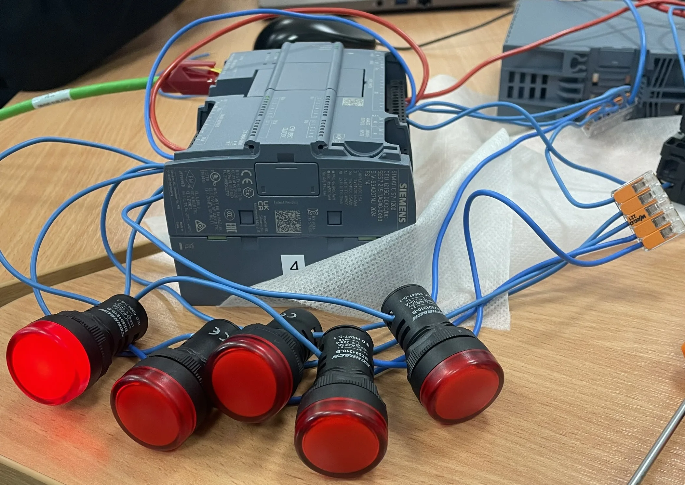

💡 Futófény PLC
Siemens S7-1200 • Ping-pong futófény • Létradiagram
A Projektről
Ez a projekt egy Siemens S7-1200 PLC-n megvalósított ping-pong futófény, amely a LED-eket egymás után kapcsolja az egyik irányba, majd a sor végére érve automatikusan visszafelé indul. A program TIA Portal környezetben, létradiagram (LAD) nyelven készült.
A Működés Elve
A futófény 5 LED-et vezérel. A léptetést egy időzítő (TON) vezérli, amely egy adott időközönként (pl. 200 ms) impulzust ad. A program egy shift regisztert használ, amely a biteket jobbra, majd balra lépteti. Amikor a legszélső LED világít, a léptetés iránya automatikusan megfordul.
Főbb Jellemzők
- 5 LED-es oda-vissza (ping-pong) futófény
- Siemens S7-1200 PLC vezérlés
- TIA Portal-ban fejlesztett létradiagram (LAD) program
- Állítható léptetési sebesség (időzítővel)
- Shift regiszter és irányváltó logika
- Üzembiztos ipari kivitel
A Program Felépítése
A léptetés ütemét egy TON időzítő adja. A preset érték állítható (pl. T#200ms).
A bitek jobbra és balra léptetése az irányváltó logika alapján történik.
Amikor a legszélső LED (Q0.0 vagy Q0.7) aktív, a program automatikusan irányt vált.
A kimenetek címzése %Q, a belső változók %M, az időzítők %DB címen történik.
Felhasznált Technológiák és Eszközök

🎬 Működés Közben
Futófény oda-vissza mozgás közben
